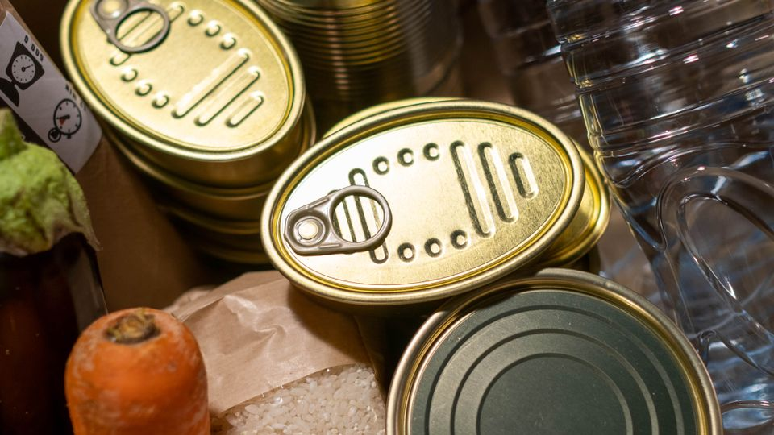

Segurança Alimentar
Auxílio Alimentação
Informações para quem precisa de orientação sobre acesso à alimentação e apoio da rede socioassistencial.

O que é esse serviço?
Nesta plataforma, Auxílio Alimentação reúne orientações sobre apoio alimentar. As ações disponíveis no município, as formas de acesso e os critérios de cada oferta devem ser confirmados com os canais oficiais. Esta página não confirma a existência de um benefício mensal específico.
Para quem é?
Pessoas e famílias com dificuldade de acesso regular a alimentos e que precisam de orientação da rede pública.
Como pode ajudar?
- Orientação inicial sobre serviços e ações de apoio alimentar.
- Encaminhamento à rede responsável, conforme a necessidade apresentada.
- Informações sobre avaliação socioassistencial e cadastramento quando exigidos pela oferta.
Como buscar atendimento?
- Procure o CRAS de referência e relate sua situação.
- Pergunte quais ações estão disponíveis e quais são os critérios de acesso.
- Confirme documentos e etapas diretamente com a equipe responsável.
Saiba mais nos canais oficiais
Ministério do Desenvolvimento Social — orientação no CRAS (abre em outra aba)
Orientações consultadas em 26/10/2026.